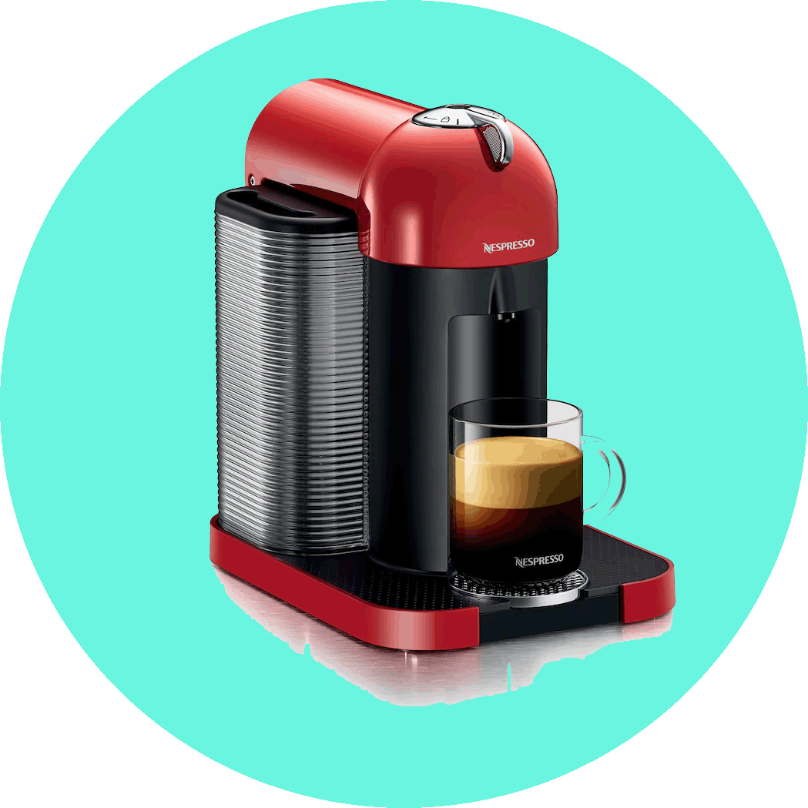

What We LOVE about Toronto
Discover our team's favorite spots, coffee shops, and cultural destinations across the city.
Land Acknowledgement
We acknowledge that we are on the traditional territory of many nations including the Mississaugas of the Credit, the Anishnabeg, the Chippewa, the Haudenosaunee and the Wendat peoples; Toronto is also home to many diverse First Nations, Inuit and Métis peoples. We also acknowledge that Toronto is covered by Treaty 13 signed with the Mississaugas of the Credit, and the Williams Treaties signed with multiple Mississaugas and Chippewa bands. Today, this meeting place is still the home to many Indigenous people from across Turtle Island and we are grateful to have the opportunity to work on this land.
Our Local Recommendations
Explore hand-picked recommendations from the fBIL team.
Bojana
Principal InvestigatorI love hole-in-the-wall places that serve delicious ethnic cuisine like Khao soi at Pai and Kani salad at the Yummy Market. The Crème Brûlée-filled donut at the Box Donut and mille-feuille at Chocolada are great sweet treats. You can walk it off at Allan and Edwards gardens or the Boardwalk in the Beaches. I also love the AGO, Aga Khan Museum, Koerner Hall, and the Distillery District Christmas Market.
Matt
PhD StudentToronto has quickly become my home since moving here from San Diego. I enjoy the vibrant city life and wonderful neighbourhoods. Some of my favourite places to eat include Pizza Banfi, Tabule, Canoe, and Montecito. In winter, I enjoy the ice rinks, especially the Natrel Rink at the Harbourfront. My favourite annual event is the Toronto Ribfest, and I am a huge fan of the Toronto Blue Jays.
Adrienne
Research AssistantHaving lived here for more than 10 years, I love Toronto's amazing music scene and excellent restaurants. One venue I enjoy is The Garrison on Dundas West, and Curry Twist in the Junction is a personal favourite. I highly recommend taking a trip to Ward’s Island in the summer or visiting the McMichael Art Gallery.
Tina
Alumni / RAI love to further my obsession with all things tiki by visiting Toronto’s tiki bars: the Shameful Tiki Room or The Shore Leave (my favorite). They offer a tropical oasis in the city. I'm also active in the Notso Amazon Softball League for queer women & trans folks. In the winter, I love cross country skiing in the Don Valley or snowboarding at Mount St Louis Moonstone.
Margaret
Research TechnicianToronto has a lot to offer for entertainment. I love the free summer festivals like the Beaches Jazz Festival, shopping at the Distillery District, events at the Harbourfront Centre, and casual hangouts in the Beaches. For cycling, my favorite path is the Humber Trail. Also check out U of T activities at Hart House!
Andrea
Postdoctoral FellowI like biking around Toronto’s ravines and parks. I enjoy experiencing new flavors in Toronto's vast variety of restaurants. Japanese and Persian cuisines are among my favorites: Ramen Raijin's Tonkotsu and Miso Ramen are incredibly delicious. I also enjoy the Lakeshore for ice skating and hanging out at the ROM and Ripley's Aquarium.
Andrew
Research AssistantIn Toronto, I love to go axe throwing and to board games cafes like For The Win at Yonge & Lawrence and Face to Face Games on the Danforth. Storm Crow Manor is Toronto’s geekiest bar, and is definitely worth checking out for its sci-fi and fantasy themed rooms!
Monica
PhD StudentMy favourite place to eat is a Tibetan restaurant called Norling, followed by plant shopping at Crown Flora. For matcha lattes, I recommend Boxcar Social, Happy Coffee and Wine, or Bampot Tea House. I also love drawing at the AGO or MOCA, and taking yoga classes at Goodspace or Yogaspace.
Emma
Master's StudentA typical Saturday afternoon routine is a workout at Spokehaus or Studio Lagree, followed by a tea at Shy Coffee Co or Little Ghosts (a horror bookstore with a cafe). For weekend evenings, I love going to Civil Liberties or Koh Lipe Thai Kitchen.

George
Nespresso MachineI don’t get out of the lab much, but if I did, I would definitely go to Hotblack Coffee and have someone else make the coffee for a change :) The coolest thing is that it’s in the heart of downtown, but there’s a fire pit out back where you can cozy up in the middle of winter.
Toronto Resources
Useful links and directories to discover more about our city.
blogTO
An endless resource for discovering events, restaurant openings, neighborhood guides, and "Best of Toronto" lists across the city.
NOW Magazine
Toronto's alternative weekly source for local news, culture, movie/stage reviews, and neighborhood happenings.
City of Toronto
The official municipality portal with guides on moving to Toronto, public transport, ice rinks, beaches, and city services.